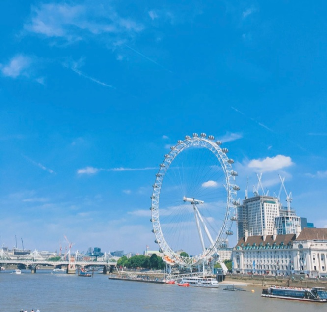

안녕하세요 소프트웨어학과 18학번 최성진 입니다. 연도별로 저를 소개하는 페이지를 만들어 보겠습니다.
인사
안녕하세요 소프트웨어학과 18학번 최성진 입니다. 연도별로 저를 소개하는 페이지를 만들어 보겠습니다.
이름 : 최성진
나이 : 24세
생년월일 : 2000.02.11
학과 : 소프트웨어학과
학번 : 32184594 (18학번)
사는 곳 : 경기도 용인시 수지구 죽전동
저는 성격이 급한 편입니다. 그래서 걸을 때도 느리게 걷질 않고 성큼성큼 빨리 걷는 편입니다. 또, 내성적이지는 않지만 사람이 많이 있는곳이나 시끄러운 장소는 선호하지 않고 조용하고 여유러운 장소를 좋아합니다 그래서 저는 조용한편이며 그래서 주위 사람들로부터 여유롭다라는 말을 자주 듣습니다.

위 사진은 혼자 유럽 한달 여행을 하면서 찍은 런던아이 입니다. 이 때 세상은 넓고 저는 우물 안 개구리였다라는 생각을 크게 가지게 되었습니다.
위에 보이는 지도는 제가 살던 동네 지도 입니다.
저는 어머니 고향인 서울에서 태어나 곧 바로 아버지 고향인 대구광역시에서 살게 되었습니다. 위 사진은 제가 살던 동네 사진으로 저는 어린시절부터 대학교 입학하기 전까지 작은 동네에서 지내 친구들이 전부 20년지기가 넘고 도시보다는 시골 쪽에 가깝기 때문에 젊은 사람들 보단 어르신들이 많이 계셔서 어르신들에게 예의범절을 배우고 곧게 자라 왔습니다. 저의 어린시절은 요새 당연하다고 생각하는 체인점, 노래방, 피시방 등 거의 없었기때문에 저는 친구들과 어르신들 농사를 도우거나 지금은 그러면 안되지만 어린 마음에 친구들과 같이 서리 등을 하는듯 자연친화적으로 자라왔습니다.
2018년 3월 저는 지금 재학중인 소프트웨어학과가 아닌 국제자유전공학부로 단국대학교에 입학하게 되었습니다. 한 학기후 저는 소프트웨어학과로 전과하게 되었고 2019년 1학기 까지 하고 군 휴학을 하게 되었습니다.
2019년 10월 21일 저는 공군으로 입대해 제11전투비행단에서 헌병으로 군생활을 했습니다. 1년 10개월 동안의 군생활을 끝내고 병장 만기전역을 한 후 저는 서울 연남동에 있는 이자카야에서 직원으로서 6개월 일하며 복학 준비를 하고 2022년 3월 복학 하게 되었습니다
복학 후 저는 지금까지 개발자가 되기위해 열심히 공부하며 학과 수업에 열중하고 있습니다.